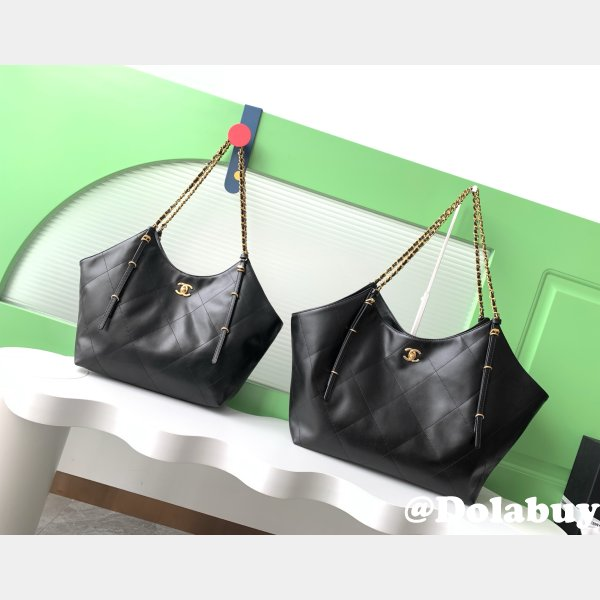

The Ultimate Guide to Buying Best Replica Bags in 2025
Table of Contents
- Introduction
- Why People Buy Replica Bags
- The Different Grades of Replica Bags
- Where to Find the Best Replica Bags
- My Experience Using Replica Bags
- Tips for Sellers of Replica Bags
- My Favorite Styles and Brands
- Why I Love These Brands
- Personal Stories
- Caring for Your Replica Bags
- Spotting a Quality Replica
- How Much Should You Pay?
- Shipping and Payments Made Easy
- The Ethics Question
- Everyday Life with Replica Bags
- What's Next for Replica Bags
- Styling Tips
- Conclusion
Have you ever dreamed of owning a designer handbag but couldn't stomach the price tag? That's where replica bags come in. These clever imitations let you enjoy the luxury look without emptying your wallet. I've been hooked on replica bags for years,and I'm excited to share everything I've learned about buying the best ones in 2025. In this guide,we'll cover why people buy them,what it's like to use them,some tips for sellers,my favorite styles,why I love certain brands,and a few personal stories that'll show you why I'm such a fan. So,grab a coffee,and let's dive into the world of Replica Handbags!
A stunning collection of high-quality replica designer bags
Why People Buy Replica Bags
Let's start with the obvious: why do so many of us turn to replica bags? For me,it's all about affordability. A real Chanel or Louis Vuitton bag can cost thousands,which is just not in my budget. With replica bags,I can get that same chic vibe for a fraction of the price. It's not just about saving money,though—it's about feeling stylish without the stress of overspending.
Another big reason is flexibility. I love switching up my look,and fake bags let me do that without committing to one expensive piece. Want a Gucci for the weekend and a Hermès for work? With replica bags,I can have both—and more—without breaking the bank. It's like having a whole designer closet on a budget.
The Different Grades of Replica Bags
Not all replica bags are the same,and that's something I learned the hard way. There are different quality levels,and knowing them can save you from disappointment. The top tier is what they call super fakes—or lushentic replicas. These Replica Handbags are so well-made,with real leather and perfect stitching,that even my picky friends can't tell they're not authentic.
Comparing different quality grades of replica handbags
Then you've got medium-quality replica bags. They're decent—good enough to fool someone from across the room—but up close,you might spot a slightly off logo or cheaper hardware. They're a solid choice if you're not too fussy. On the flip side,low-quality fake bags are a no-go for me. They scream fake with their wonky logos and flimsy materials. I've had one fall apart after a week—not worth it.
Where to Find the Best Replica Bags
Finding a good seller is key when you're hunting for replica bags. I've tried a bunch of sites over the years,and some stand out. My favorite is Shoulderbagbrasil—they've got a huge selection of Replica Handbags,from Chanel to Prada,and the quality is top-notch. Their photos are super detailed,which I love because I can see exactly what I'm getting.
Other great options include Luxuryrepbags and Lxycopybags. Both are known for high-quality replica bags and solid customer service. I always check reviews and look for sellers who offer clear return policies. It's a bit of a treasure hunt,but once you find a reliable source for fake bags,it's smooth sailing.
My Experience Using Replica Bags
I've been carrying replica bags for ages,and the good ones never fail to impress me. Take my fake Chanel bag from Shoulderbagbrasil—it's got this soft leather and perfect stitching that makes it feel so luxe. I took it to a friend's party once,and everyone thought it was the real deal. That's the kind of confidence boost I live for!
Enjoying the luxury experience with a high-quality replica bag
But I've had some flops too. I once grabbed a cheap replica bag from a sketchy site,and the zipper broke on day two. Lesson learned: stick to trusted sellers. When you get a high-quality Replica Handbag,it's durable,stylish,and honestly just as good as the originals for everyday use.
Tips for Sellers of Replica Bags
If I were running a shop selling Replica Handbags,I'd keep a few things in mind. First,be upfront about what you're selling. Don't hype up a medium-quality bag as a super fake—buyers like me can tell the difference,and it just leads to returns. Honesty builds trust.
Second,show off your bags with tons of photos. I want to see the stitching,the logo,everything. Good descriptions help too—tell me about the materials and how it's made. And please,have a decent return policy. If my replica bag shows up and it's not what I expected,I want to know I can send it back without a hassle.
My Favorite Styles and Brands
When it comes to replica bags,I've got some styles I can't get enough of. The Louis Vuitton Neverfull is my daily go-to. It's big,sturdy,and matches everything I wear. I love how the monogram looks so classy yet laid-back—it's why I'm obsessed with LV replica bags.
The most sought-after replica bag styles in 2025
Then there's the Chanel Classic Flap. That quilted leather and chain strap? Pure elegance. I've got a fake Chanel bag that I pull out for fancy nights,and it always feels special. And don't get me started on the Hermès Birkin—my replica Birkin is a total showstopper. These brands hook me with their timeless designs and versatility.
Why I Love These Brands
What is it about these brands that keeps me coming back to their replica bags? For Louis Vuitton,it's the mix of practicality and style. Their bags are tough—I've hauled mine around for years—and the monogram just screams sophistication. Chanel's charm is all about that classic vibe. Every time I carry my fake Chanel bag,I feel like I'm channeling some old-school glamour.
Hermès wins me over with its craftsmanship. Even in replica form,the attention to detail on a Birkin is unreal. These brands make Replica Handbags that feel like they're worth every penny,even if they're not the real deal.
Personal Stories
A Night to Remember
Let me tell you about a time my replica bag totally saved the day. I got invited to this swanky gala a while back,and I had this gorgeous dress but no bag to match. I wasn't about to drop a fortune on a real Gucci,so I ordered a fake Gucci bag instead. When it arrived,I was floored—it looked so legit. At the event,people kept complimenting my "designer" bag,and I just smiled,feeling like a million bucks without spending it.
That night sealed it for me. Replica bags aren't just about looking good—they're about feeling good too. I strutted around with confidence,and no one was the wiser.
The Birthday Surprise
Here's another story I love. My sister's birthday was coming up,and she's always envied my bag collection. I couldn't afford a real designer bag for her,but I knew a Replica Handbag would make her day. I picked out a stunning replica bag from Shoulderbagbrasil and wrapped it up. When she opened it,she freaked out—in a good way! She uses it all the time now and tells everyone how much she loves her "designer" bag. It's our little secret,and it makes me so happy to see her rocking it.

A beautifully packaged replica bag makes the perfect gift
Caring for Your Replica Bags
Even though they're not authentic,I treat my replica bags with care so they last. I keep them out of the rain—water can mess up the leather—and store them in a dust bag when I'm not using them. I'm gentle with the zippers too,since those can wear out if you're rough. A quick wipe with a soft cloth keeps them looking fresh. It's simple stuff,but it keeps my Replica Handbags in great shape.
Spotting a Quality Replica
How do I know if a replica bag is worth buying? I check the materials first—good ones use real leather or high-end synthetics. The stitching should be neat,no loose threads. Logos need to be spot-on,not blurry or misplaced. And the hardware? It's got to feel solid. I've passed on plenty of fake bags because the zipper felt cheap. Stick to these checks,and you'll end up with a gem.
Quality Checklist for Replica Bags
- Material quality (real leather or high-grade synthetic)
- Precise stitching with no loose threads
- Accurate logo placement and clarity
- Solid,weighty hardware that doesn't feel cheap
- Proper alignment of patterns (especially for monogram designs)
- Smooth zippers and functional closures
- Correct interior lining material and color
- Accurate brand stamps and engravings
How Much Should You Pay?
Price is a big deal with replica bags. The best ones—those super fakes—usually run between $300 and $800. My replica Birkin cost me around $500,which is a steal compared to the real thing's $10,000-plus price tag. If you see a Replica Handbag for less than $200,be skeptical—it's probably not going to hold up.
Shipping and Payments Made Easy
Buying replica bags online means dealing with shipping and payments,so here's what I've figured out. Most sellers ship from China,so it can take a few weeks—plan ahead if you need it fast. I like using PayPal for payments because it's safe and I can dispute if something's off. Always double-check the seller's return policy too. It's all about making the process stress-free.
The Ethics Question
I get it—some folks worry about the ethics of fake bags. Does it hurt the big brands? Maybe a little,but I'm not reselling them or pretending they're real. For me,replica bags are a personal treat,not a statement. If it bothers you,look for sellers who keep things above board and focus on quality over trickery.
Everyday Life with Replica Bags
In my world,replica bags are a game-changer. I can grab a fake Chanel bag for a night out or a replica Neverfull for grocery runs,and I don't sweat the cost. They let me play with fashion without the guilt. Plus,I've got a little collection going—way more fun than stressing over one pricey bag.
Travel Companion
Last year,I took a replica Gucci bag on a trip to Italy. I didn't want to risk losing a real designer bag,and this one was perfect—light,roomy,and cute in all my photos. People kept asking where I got it,and I just grinned. That trip showed me how replica bags can be practical and stylish,no matter where you are.
What's Next for Replica Bags
Looking ahead to 2025,I think replica bags are only going to get better. The tech's improving,so super fakes are getting crazily close to the originals. It's exciting,but it also means we've got to be pickier about where we buy. I keep up with forums like r/Repladies to stay in the loop on the best Replica Handbags.
Styling Tips
I love playing with how I wear my replica bags. For casual days,I pair a fake Neverfull with jeans and a tee—effortless. For dressier vibes,my replica Chanel with a little black dress is unbeatable. Sometimes I add a scarf or charm to mix it up. It's all about having fun with it.
Why I'll Keep Buying Them
Here's the thing: replica bags fit my life perfectly. They're affordable,gorgeous,and let me enjoy fashion on my terms. I don't need the real thing to feel good—I just need a great Replica Handbag that makes me smile. And with sellers like Shoulderbagbrasil,I know I'm getting quality every time.
Wrapping It Up
So,there you have it—my take on buying the best replica bags in 2025. Whether you're after style,savings,or just a little luxury without the fuss,fake bags are worth a look. Stick to good sellers,care for your bags,and enjoy the ride. Ready to start? Check out Shoulderbagbrasil for some amazing Replica Handbags. Happy shopping!